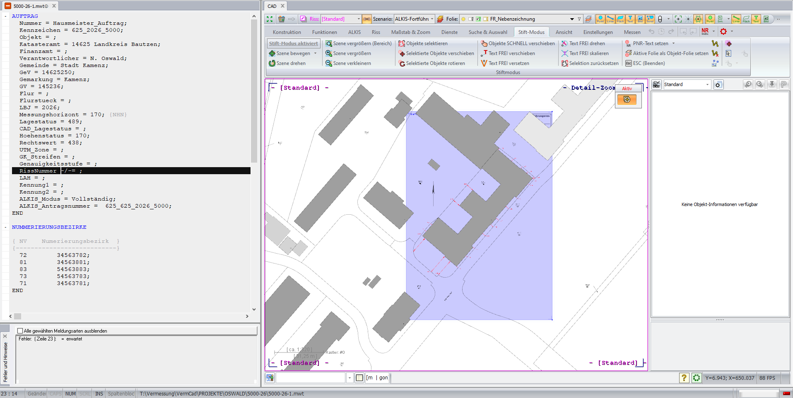
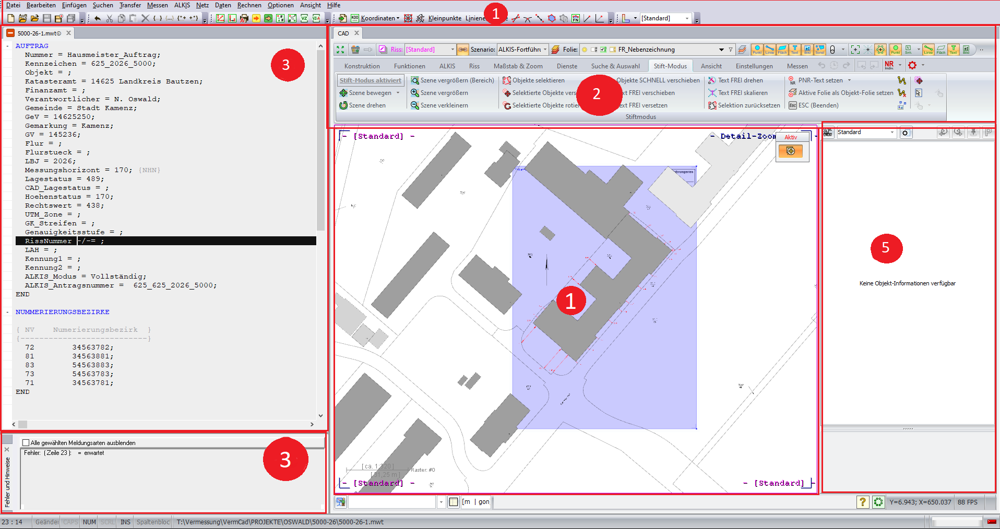

🖥 VermCAD Oberfläche
Aufbau und Bedienung der Programmoberfläche
🖥 Aufbau der VermCAD Oberfläche
Orientierung im Programm

Übersicht der wichtigsten Bereiche der VermCAD-Oberfläche.
Die Oberfläche von VermCAD besteht aus verschiedenen Bereichen, die für die tägliche Bearbeitung benötigt werden. Eine gute Orientierung in der Oberfläche erleichtert die Arbeit und hilft dabei, Funktionen schneller zu finden.

1️⃣ Menüleiste
2️⃣ Symbolleisten
3️⃣ Projektbereich
4️⃣ Kartenfenster
5️⃣ Eigenschaftenfenster
6️⃣ Statusleiste
🔢 Aufbau der Oberfläche
| Nummer | Bereich | Aufgabe |
|---|---|---|
| 1️⃣ | Menüleiste | Zugriff auf Funktionen, Einstellungen und Werkzeuge |
| 2️⃣ | Symbolleisten | Schneller Zugriff auf häufig verwendete Funktionen |
| 3️⃣ | Projektbereich | Übersicht über Daten und Projektstruktur |
| 4️⃣ | Kartenfenster | Grafische Darstellung von Punkten und Objekten |
| 5️⃣ | Eigenschaftenfenster | Informationen zu ausgewählten Objekten |
| 6️⃣ | Statusleiste | Anzeige wichtiger Informationen zum aktuellen Zustand |
1️⃣ Menüleiste
Aufgabe
Über die Menüleiste werden die verschiedenen Funktionen von VermCAD aufgerufen.
Typische Bereiche
✔ Projekte verwalten
✔ Daten laden
✔ Berechnungen starten
✔ Einstellungen ändern
✔ Ausgaben erzeugen
Kontrolle
Vor Arbeitsbeginn prüfen:
✔ Ist das richtige Projekt geöffnet?
✔ Sind die benötigten Funktionen verfügbar?
2️⃣ Symbolleisten
Aufgabe
Die Symbolleisten ermöglichen einen schnellen Zugriff auf häufig benötigte Funktionen. Dadurch können Arbeitsschritte schneller ausgeführt werden, ohne jedes Menü einzeln öffnen zu müssen.
Typische Funktionen
Beispiele:
✔ Auswahlwerkzeuge
✔ Zoomfunktionen
✔ Darstellungsfunktionen
✔ Bearbeitungswerkzeuge
✔ Berechnungsfunktionen
Kontrolle
Prüfen:
✔ Sind die benötigten Werkzeuge sichtbar?
✔ Sind wichtige Symbolleisten aktiviert?
✔ Ist der Arbeitsbereich übersichtlich?
3️⃣ Projektbereich
Aufgabe
Der Projektbereich zeigt die Struktur und Inhalte des aktuell geöffneten Projektes. Hier werden Daten verwaltet und für die Bearbeitung ausgewählt.
Kontrolle im Projektbereich
Vor der Bearbeitung prüfen:
✔ Ist das richtige Projekt geöffnet?
✔ Sind die benötigten Daten vorhanden?
✔ Sind die richtigen Informationen geladen?
Typische Fehler
Probleme entstehen häufig durch:
✔ falsches Projekt
✔ fehlende Daten
✔ nicht geladene Informationen
4️⃣ Kartenfenster
Zentrale Arbeitsfläche
Das Kartenfenster ist einer der wichtigsten Bereiche in VermCAD. Hier werden Vermessungsdaten grafisch dargestellt und kontrolliert.
Dargestellte Informationen
Beispiele:
✔ Punkte
✔ Linien
✔ Flächen
✔ Vermessungsobjekte
✔ Hintergrundinformationen
Kontrolle der Darstellung
Bei Problemen prüfen:
✔ richtiger Kartenausschnitt
✔ richtige Zoomstufe
✔ Daten sichtbar geschaltet
✔ richtige Darstellungseinstellungen
5️⃣ Eigenschaftenfenster
Aufgabe
Das Eigenschaftenfenster zeigt Informationen zu ausgewählten Objekten. Es dient zur Kontrolle und Bearbeitung von Objektdaten.
Mögliche Informationen
Beispiele:
✔ Punktnummer
✔ Koordinaten
✔ Attribute
✔ Eigenschaften des Objektes
Praxis
Bei Problemen mit einzelnen Punkten oder Objekten sollte zuerst geprüft werden, welche Informationen hinterlegt sind.
6️⃣ Statusleiste
Aufgabe
Die Statusleiste zeigt Informationen zum aktuellen Zustand des Programms.
Mögliche Anzeigen
✔ aktuelle Einstellungen
✔ Hinweise zum Arbeitszustand
✔ Informationen zur Auswahl
🪜 Erste Schritte nach dem Programmstart
Empfohlener Ablauf
Nach dem Öffnen von VermCAD:
1️⃣ Projekt öffnen
2️⃣ Projektgrundlagen prüfen
3️⃣ Benötigte Daten laden
4️⃣ Kartendarstellung kontrollieren
5️⃣ Arbeitsbereich vorbereiten
Ziel
Ein sauber vorbereiteter Arbeitsbereich verhindert spätere Fehler und erleichtert die Bearbeitung.
⚠ Typische Probleme der Oberfläche
| Problem | Mögliche Lösung |
|---|---|
| Daten nicht sichtbar |
✔ Kartenausschnitt prüfen
✔ Darstellung aktivieren ✔ Daten laden |
| Fenster fehlt |
✔ Arbeitsbereich prüfen
✔ Fenster wieder einblenden |
| Falsche Informationen sichtbar |
✔ richtige Auswahl prüfen
✔ Eigenschaften kontrollieren |
| Programm wirkt unübersichtlich |
✔ nicht benötigte Bereiche schließen
✔ Arbeitsbereich anpassen |
💡 Praxistipp
Eine gut eingerichtete Oberfläche spart im Arbeitsalltag viel Zeit. Es lohnt sich, die wichtigsten Werkzeuge und Fenster so einzustellen, dass die häufigsten Aufgaben schnell erreichbar sind.